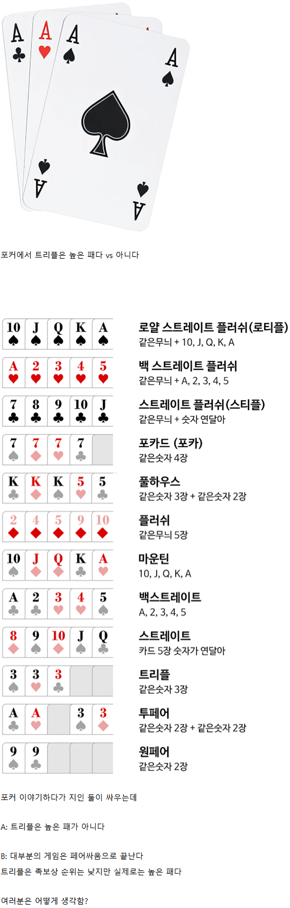

트리플이 2.1% 투페어가 4.7% 원페어42% 족보없음 50%
2.1이면 높은패네
트리플 이상이 3.3%니까 222를 잡아도 96%는 이기는거면 높은거맞는듯
하이카드 아닌게 어디야
세븐 포커 하면 운영자들 개많아서 마운틴들고도 존나 짐
경험상 트리플은 세본 포커보다는 텍사스 홀덤에서 좀 더 자주 봤음
대부분의 도박은 명확한 족보와 그 이유가 있는데 섯다만 이상한 족보임. 스트레이드 = 숫자 순서 5장, 페어 같은 숫자 2장, 플러쉬 같은모양 5개, 섯다는 38이 최고 족보임 특별한 의미가 없음.
광 두개면 이해라도 가는데 세륙 알리 장사 등등 중간족보가 진짜 희한함ㅋㅋㅋ 영화타짜에서는 아예 없더만 사구파토 빼고는
클래식 섯다는 족보 없지 ㅋㅋ
한게임섯다만 해봐서 친척들하고 리얼월드 섯다 할때 그뭔씹당함ㅋㅋㅋ 세륙인데 망통됨..
저거 모든 족보 옆에 퍼센트를 달아야 체감옴
요즘은 보통 홀덤인데
바닥패 노페어 노스트레이트 노플러시에 내 손패 페어로 만든 트리플은 어지간하면 무적임
까놓고 게임 유형이 뭐든 히든 손패에 트리플 들고있다? 이건 거의 뭐.. ㅋㅋㅋ
트리플이 어렵긴하지만 텍사스 홀덤 기준으로 바닥에 뭐가 깔렸는지에 따라 고민이 많이 되기 시작함... 만약 페어도 없다? 이건 질러야지. 근데 투페어까지 깔려 있으면 개쫄리고 원페어도 고민이 좀 됨.
뭔 포커냐에 따라 다르고 홀덤이면 메이드가 언제 됐는지에 따라 다르고 프리플랍 액션이 어떻게 나왔느냐에 따라 다르고 보드에 따라 다름. 사람들이 보통 드로우를 가지고 베팅을 따라가니까 셋이 별로 안높게 느껴지는거임. 리버 보여주기 전에 배팅으로 죽이는게 낫기는함
친구들끼리 최소 3인 이상 짤짤이판 세븐 포커를 친다? 봉 이상 뜨면 거의 이긴거 독사 알리 같은 수준
근데 그 봉이 아카큐잭10 으로 뜬다? 앵간해서 걍 이긴거 약간 섯다로 생각하면 장삥 같은 느낌
트리플은 시발 페어만잘붙어도 대가리 팽팽 돌려야하는데
발라트로 보니까 트리플정도면 좋음
낮은패는 아니지 머
몇명이서 하냐에 따라 다르지 않나?
그 5장짜리면 높은거아님.?
하는거보고 심리전해야지 풀하우스 들고도 뒤진다
같은 트리플이라도 예를들어 커뮤니티 카드의 페어를 이용한 트리플이냐에 따라 상대적인 밸류가 또 갈려서 단순히 족보 자체만 가지고 높냐 낮냐를 따지는게 좀 무의미하지
일단 기본적으로는 제법 높은패긴해 트리플 이상이 뜰 확률이 커뮤니티카드 끝까지 다 까도 산술적으로 약 15% 정도밖에 안됨
상대가 트리플이 오픈된 상태라면 일단 상대 입장에선 폴드 마렵지 않나
로또3등같은거지 금액숫자인 상금으로보면 어중간해보이지만 등장확률과 개끗발인 포카드에서 한장빠진것뿐이란 점에선 매우 높은 위치
확률로 따져야지 그위에 높은패가있으면 뭐하나 뜨질않는데 ㅋㅋ
트리플이면 상황에 따라 올인도 가능한 높은 패지
딱 5장까지만 보는 형식이면 겁나 높지
저 정도도 잘 안뜸
그리고 셋이나 트립스냐 차이도 있고
홀덤이면 갖고 있는 두장이 중요한거지 트리플이든 뭐즌 ㅈ도 중요하지 않음.
확률로 접근하면 되지 그걸 왜 싸움. 트리플보다 높을 확률 10퍼센트 쯤 될 것 같은데. 7장이면 20퍼센트쯤 되려나
홀덤기준. 풀하우스 2.6 플러시 3 스트레이트 4.6 트리플 4.8 // 트리플 이상일 확률 = 14.5%
근데 진짜 해보면 친구끼리 현실에서 해보면 어지간하면 투페어에서 컷남 ㅋㅋ
A포함된 투페어면 승률 꽤 높고
높긴 한데, 나한테 좋은 거 들어오면 상대한테도 괜찮은 패가 들어가는 경우가 많더라
몇판해보면 높은패인데 또 다르긴함 엄청높은건 아니여서 달리기는 에매한 상황에따라 다르겠지 아무래도
높지
셋이면 몬스터임
트리플이면 올인 급이지 ㅋㅋㅋㅋㅋㅋㅋ 투페어로도 22 qq만 들어와도 올인 치면 거진 다 발라 먹는데 ㅋㅋㅋㅋ
트리플이면 달릴만 하지
포커 안해봤네
홀덤 몇판 만 하면 이해 바로 됨.
살면서 트리플 잡아본적 별로안됨, 존나 포은거임
홀덤 기준으론 폴드 안한 놈들이랑만 붙으니 상대적으로 약해지긴함
파이브카드면 높은편 맞지 않나